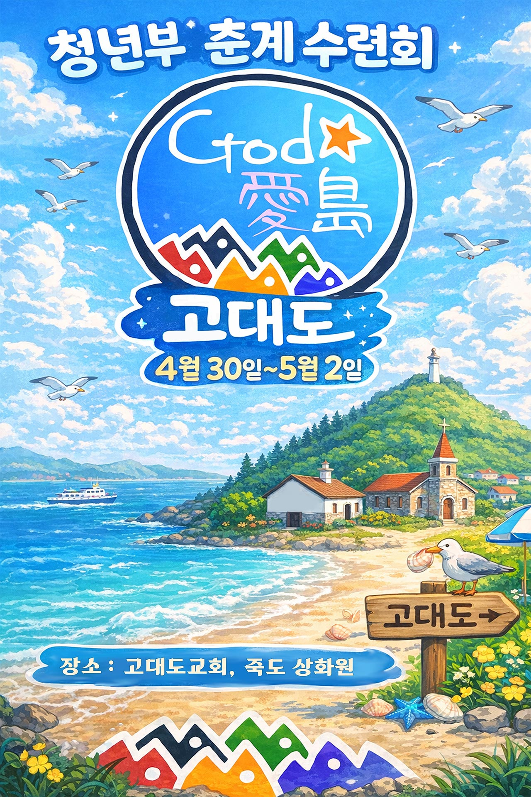

내가 여기 있나이다.
나를 보내소서!
내가 또 주의 목소리를 들으니 주께서 이르시되
내가 누구를 보내며 누가 우리를 위하여 갈꼬 하시니
그 때에 내가 이르되 내가 여기 있나이다 나를 보내소서 하였더니
— 이사야 6:8
정수목 목사
• 동일교회 고대도선교센터장
• 칼 귀츨라프 선교연구소 소장
• 대구동일교회 부목사
충남 보령 태안해안국립공원 안에 위치한 작은 섬으로,
1832년 한국 개신교 최초의 선교사
칼 귀츨라프가 처음 발을 디딘 땅입니다.
한국 최초의 주기도문 번역을 시도하고,
한글의 우수성을 세계에 알린 그의 발자취가
지금도 이 섬 곳곳에 남아 있습니다.
God愛島
하나님이 사랑하신 섬